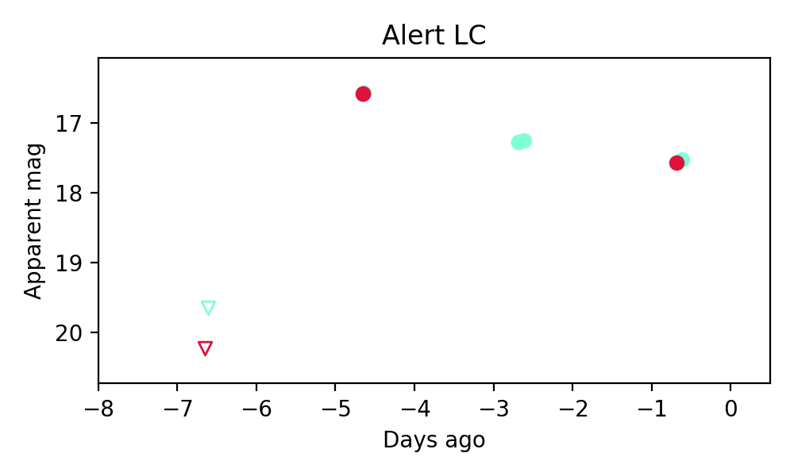
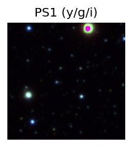
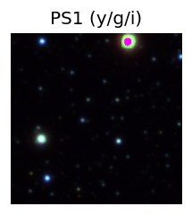
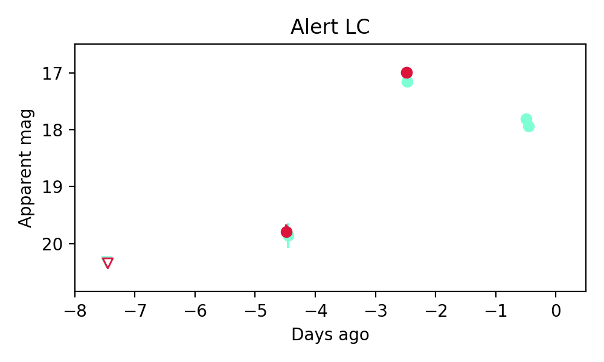
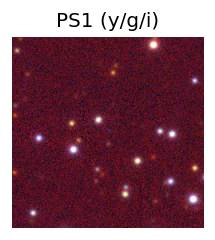
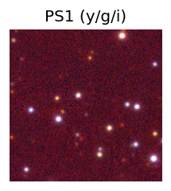
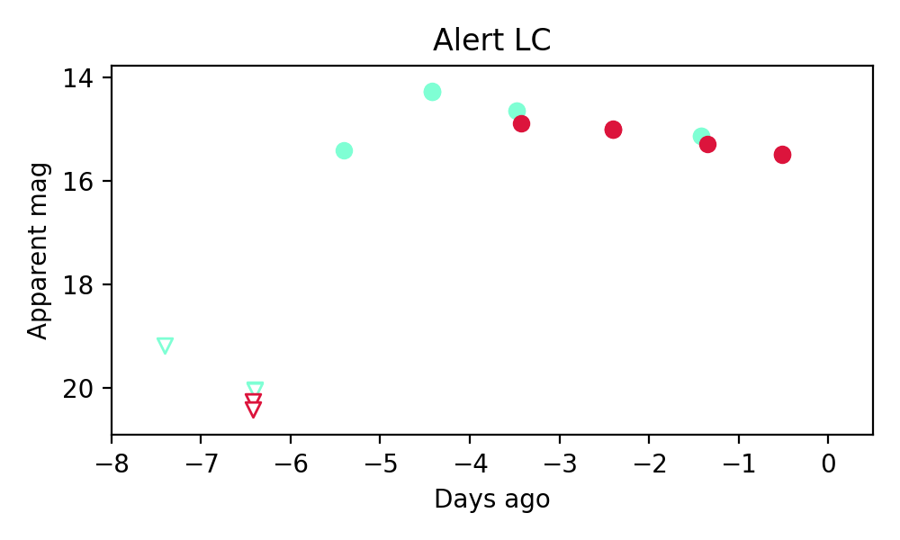

Candidate List 20251106Previous Day Next Day
Section 1: New Sources (age<1d) Section 2: Old (1-5d) sources observed last nightplaceholder
Section 1: New Afterglow/FBOT Cands Last Night (0)
Section 2: Older Sources Observed Last Night (3)
0. ZTF25accrakg (Afterglow?) [Back to Top] [Share] [Trigger Swift] [Fritz] [Lasair]RA, Dec: 290.31848, -6.76897 19h21m16.44s, -6d-46m-8.29sGalactic (l, b): 30.25027, -9.69917 ext(g-r) = 0.352

TESS: Sectors [54 80]
PS1: 1 source in 3 arcsec Closest: d = 2.35 arcsec photoz=0.46+/-0.39 peak abs mag = -26.64
LegacySurvey: 0 sources in 3 arcsec

Extinction-corrected gr color:
From alerts: -0.36 +/- 0.02 mag
Rise Rate:
g: 1.56 mag/day
r: 1.83 mag/day
i: -99 mag/day
Fade Rate:
g: 0.34 mag/day
r: -99 mag/day
i: -99 mag/day
1. ZTF25accrbgi (Afterglow?) [Back to Top] [Share] [Trigger Swift] [Fritz] [Lasair]RA, Dec: 287.46682, -2.94081 19h 9m52.04s, -2d-56m-26.92sGalactic (l, b): 32.40927, -5.43921 ext(g-r) = 0.809 

TESS: Sectors 54
PS1: 1 source in 3 arcsec Closest: d = 3.43 arcsec photoz=0.43+/-0.17 peak abs mag = -26.64
LegacySurvey: 0 sources in 3 arcsec

Extinction-corrected gr color:
From alerts: -0.65 +/- 0.02 mag
Rise Rate:
g: 0.63 mag/day
r: 1.4 mag/day
i: -99 mag/day
Fade Rate:
g: 0.27 mag/day
r: -99 mag/day
i: -99 mag/day
2. ZTF25accuzrr (FBOT?) [Back to Top] [Share] [Trigger Swift] [Fritz] [Lasair]RA, Dec: 322.94648, 38.42952 21h31m47.15s, 38d25m46.28sGalactic (l, b): 85.50723, -9.5286 ext(g-r) = 0.269 

TESS: Sectors [15 16 55 56 76 82 83]
PS1: 1 source in 3 arcsec Closest: d = 0.03 arcsec photoz=0.06+/-0.16 peak abs mag = -23.66
LegacySurvey: 0 sources in 3 arcsec

Rise Rate:
g: 4.68 mag/day
r: -99 mag/day
i: -99 mag/day
Fade Rate:
g: -99 mag/day
r: -99 mag/day
i: -99 mag/day